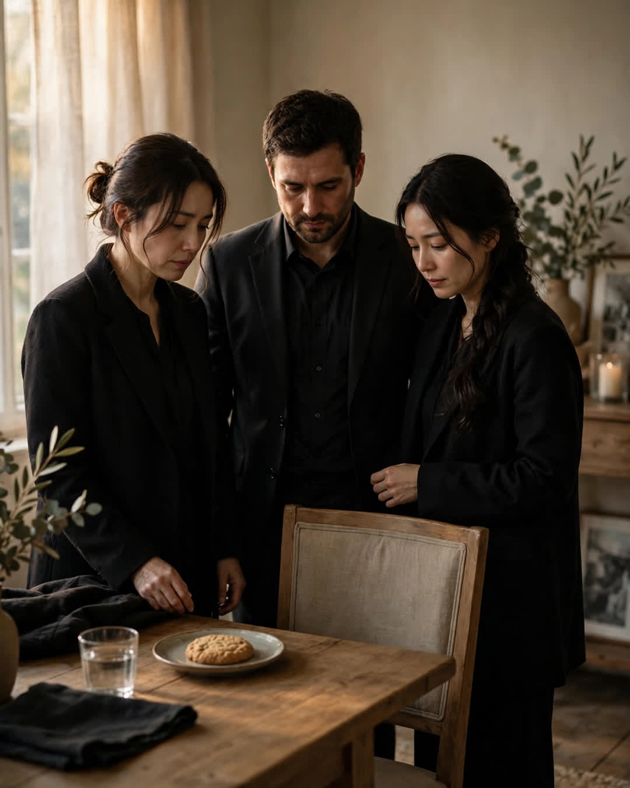

The Cookie Treaty
A Clipp Kaili original story

In the summer of 1989, my mother's cookie jar started a war, and ended it with a treaty that outlived her.
There were three of us — me, my brother Sam, and our sister Beth — and there was one cookie jar, and on the last day of summer, one cookie. One. A single oatmeal raisin, sitting in the bottom of that jar like the last train out of town. The fight that followed is still spoken of in our family in the tones people use for natural disasters. I believe a lamp was involved. I know the phrase "you were adopted" was said by all three of us, about all three of us.
Mom ended it the way she ended everything: with a pen. She wrote the treaty on an index card in her no-nonsense hand and made us sign it in crayon.
THE LAST COOKIE TREATY. The last cookie in any jar, in any house of this family, forever, belongs to whoever is having the worst day. Deciding whose day is worst is done OUT LOUD, together, no sulking. The winner must eat the cookie slowly, in front of everyone, and may not gloat. Signed, the management (Mom) and the combatants.
We were furious. It was also, immediately and forever, the law.
That card ruled our childhood. Bad report card? Cookie. Cut from the team? Cookie, with a hearing. First heartbreak — Beth, age sixteen, face down on the kitchen floor in full opera — unanimous verdict, cookie, eaten slowly, per the treaty, while Sam and I performed a solemn drumroll on the counter.
We grew up. We scattered. The card went into Mom's recipe box, and the treaty, like all childhood laws, slept.
Mom died on a Tuesday in October, at eighty-one, in her sleep, with all of us close enough to make it home. The funeral reception was at Beth's house — sandwiches, casseroles, the soft murmur of people being kind at low volume. And at the end of the table, on a plate by itself, somebody — to this day, none of us admits who — had placed one oatmeal raisin cookie.
Sam saw it first. He stopped mid-sentence. Beth followed his eyes. I followed hers.
Three grown people, in funeral clothes, stood around a plate with one cookie on it, and thirty-five-year-old law rose up between us exactly as written.
"Deciding is done out loud," Beth whispered. "Together."
We made our cases, quietly, at the reception of our own mother's funeral. Sam's divorce had finalized that month. Beth had given the eulogy, which she'd written in the car, shaking. I had held Mom's hand the most in the last year, and letting go was — I did my best. I couldn't finish.
We looked at that cookie a long time. Then Beth, the eldest, the executor of all things Mom, picked up the plate, carried it to the empty chair at the head of the table — Mom's chair, where nobody had sat all day — and set it down in front of it.
"Worst day," she said, "is hers. She's the one who isn't here for it."
We left it there. Per the treaty. Slowly, in front of everyone. No gloating.
Some laws a mother makes are for the children standing in her kitchen.
Some are for the day she's not standing there anymore — little bridges she builds ahead of time, so her kids can find each other on the worst day of their lives, over one cookie, exactly where she left them.
This story is a work of fiction, written to touch hearts and bring families closer.
← Back to all stories